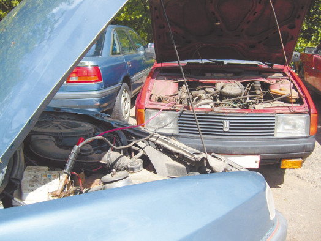

Ремень генератора
Многие новички забывают о том, что приводной ремень генератора и навесного оборудования нужно периодически заменять (рис. 4.1). В результате он рвется в самый неподходящий момент (обычно там, где ближайшая СТО далеко, да и вообще до цивилизации неблизко), но свежеиспеченный водитель этого не замечает, так как забывает контролировать температуру по датчику на приборной панели (этот ремень обслуживает не только генератор, но и систему охлаждения). Стрелка давно уже зашкаливает в красном поле, а водитель спокойно продолжает поездку и останавливается только тогда, когда видит клубы пара, вырывающиеся из-под капота. Хорошо, если после такой поездки все обойдется лишь заменой ремня да сгоревших прокладок (обычно все прокладки выгорают в пыль). А ведь может и заклинить двигатель.
Как разновидность вышеописанного случая: водитель обнаруживает, что его машина «парит». Он останавливается, поднимает капот, видит разорванный ремень и вспоминает, что у него в багажнике лежит точно такой же, только новенький, в упаковке (собирался поменять, да забыл). Водитель ждет, пока подкапотное пространство остынет (это в лучшем случае, есть и те, кто пытается снять крышку бачка в самый «паровой» момент, а это – фонтан горячего пара и воды в лицо и на руки), а затем меняет порванный ремень на новый. После чего пытается ехать дальше. Конечно, если поломка была «поймана на взлете», до того, как температура успела подняться до заоблачных далей, такие действия вполне оправданы. Но если автомобиль некоторое время ехал с разорванным ремнем генератора, то необходимо проверить целостность прокладок. Если прокладки прогорели, то попытка ехать дальше может привести к тому, что через картер в двигатель погонит не только бензин, но еще и воду из системы охлаждения, а ехать на такой великолепной смеси не смог еще ни один автомобиль.
Рис. 4.1. Ремень генератора
Вообще проблема ремней у новичков за рулем стоит очень остро. По большей части о ремне генератора вспоминается только тогда, когда в один момент автомобиль глохнет, а лампочка аккумуляторной батареи тревожно горит, показывая полный разряд. То есть генератор уже не работал, но автомобиль честно старался для хозяина, ехал на одном аккумуляторе, заряда которого, как известно, надолго не хватает (рис. 4.2).

Рис. 4.2. С помощью «прикуривания» можно сдвинуть с места автомобиль с неработающим генератором, но через полчаса аккумулятор вновь разрядится
Что интересно, даже фонтан кипящей воды и пара из расширительного бачка далеко не каждого водителя-новичка подвигнет на проверку ремня генератора. Подобное связано с тем, что водитель недостаточно хорошо представляет себе устройство автомобиля, и само название «ремень генератора» вводит в заблуждение – кажется, что этот ремень относится только к генератору, а то, что в системе охлаждения температура явно превышает критическую, связано с чем-то другим. Кстати, случается, что автомобиль с такой поломкой доставляется на СТО с требованием: «У меня сломалась система охлаждения, сделайте что-нибудь!» – и водитель очень удивляется, когда узнает, что сломалось нечто совсем другое.
Любопытно, что в автомобиле имеется всего два ремня: ремень генератора и ремень газораспределительного механизма (ремень ГРМ), и новички благополучно забывают менять оба! К чему приводит разорванный ремень генератора, мы уже рассказали, а ведь с ремнем ГРМ ситуация еще хуже.